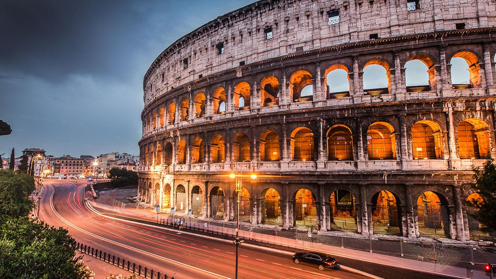

Rome today is one of the most important tourist destinations of the world, due to the incalculable immensity of its archaeological and artistic treasures, as well as for the charm of its unique traditions, the beauty of its panoramic views, and the majesty of its magnificent "villas" (parks). Among the most significant resources are the many museums – Musei Capitolini, the Vatican Museums and the Galleria Borghese and others dedicated to modern and contemporary art – aqueducts, fountains, churches, palaces, historical buildings, the monuments and ruins of the Roman Forum, and the Catacombs. Rome is the third most visited city in the EU, after London and Paris, and receives an average of 7–10 million tourists a year, which sometimes doubles on holy years. The Colosseum (4 million tourists) and the Vatican Museums (4.2 million tourists) are the 39th and 37th (respectively) most visited places in the world, according to a recent study.
Rome is a major archaeological hub, and one of the world's main centres of archaeological research. There are numerous cultural and research institutes located in the city, such as the American Academy in Rome,[ and The Swedish Institute at Rome. Rome contains numerous ancient sites, including the Forum Romanum, Trajan's Market, Trajan's Forum, the Colosseum, and the Pantheon, to name but a few. The Colosseum, arguably one of Rome's most iconic archaeological sites, is regarded as a wonder of the world.
